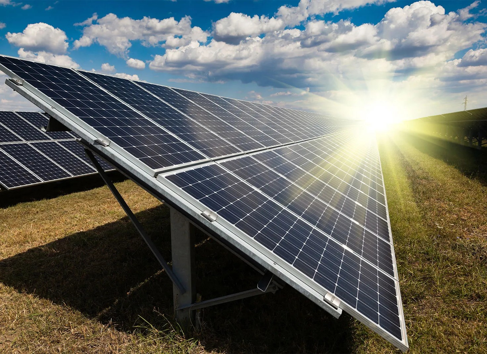
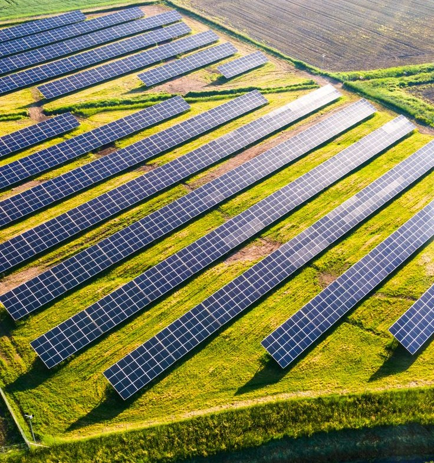
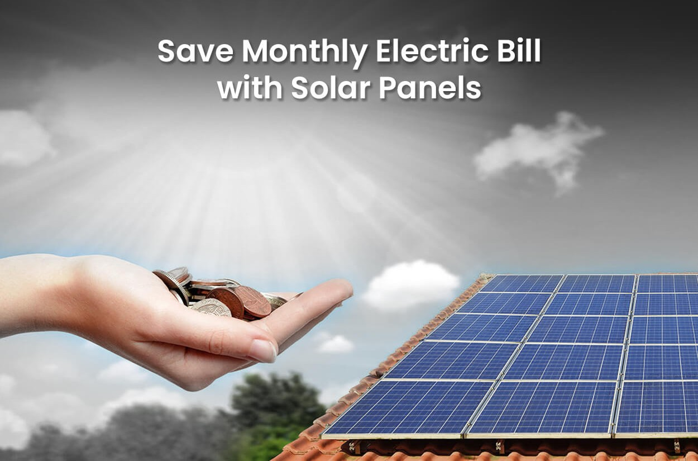
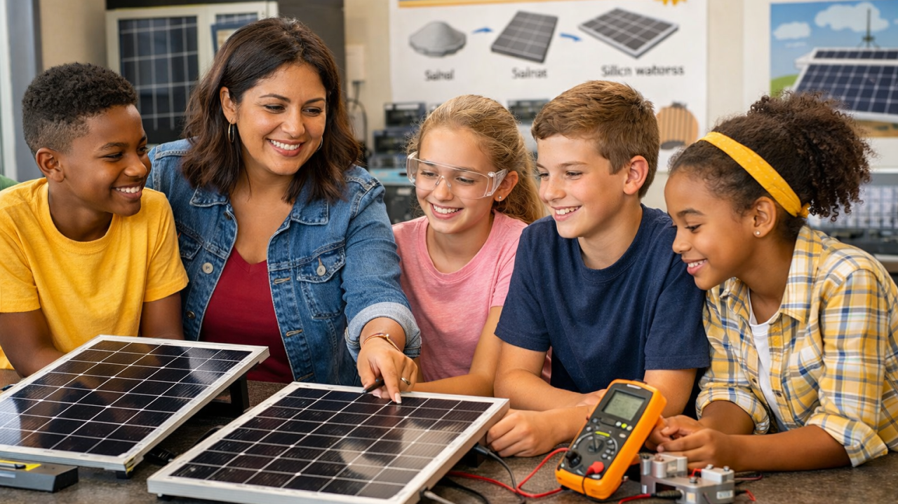
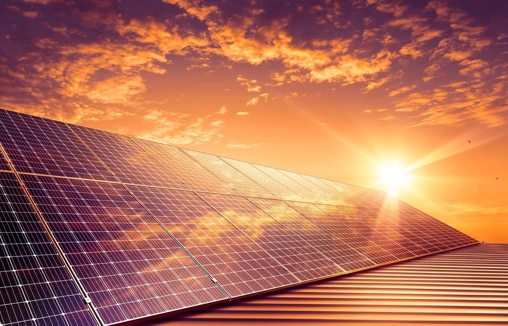

Solar Power: Charging the Future
Solar energy is the most abundant energy source on Earth. Every hour, the sun delivers more energy to our planet than humanity uses in an entire year. Harnessing this resource is one of the most powerful tools we have for achieving SDG 7 ensuring access to affordable, reliable, sustainable, and modern energy for all.

How Solar Power Works
Solar photovoltaic (PV) panels are made of semiconductor cells, usually silicon, that absorb photons from sunlight and release electrons, generating direct current (DC) electricity. An inverter then converts this to alternating current (AC) for household and grid use.
Key Components
A typical solar installation consists of PV panels, mounting structures, an inverter, a meter, and potentially battery storage. Modern panels achieve efficiencies between 18–23%, meaning roughly one-fifth of all sunlight hitting the panel is converted to electricity.
"The cost of solar electricity has fallen by 89% over the last decade, making it the cheapest source of electricity in history in most parts of the world." — IRENA, 2023

Benefits of Solar Energy
Solar power offers a wide range of environmental, economic, and social benefits that make it central to the clean energy transition.
Environmental Impact
Once installed, solar panels produce zero direct emissions. Over a 25-year lifespan, a typical home solar system offsets around 100 tonnes of CO₂ equivalent to planting 2,500 trees. Solar produces no water pollution, noise, or hazardous waste during operation.
Economic Benefits
Beyond reducing electricity bills, solar panels can generate surplus power that is sold back to the grid via Feed-in Tariffs or Smart Export Guarantees. With payback periods now as low as 5–7 years in the UK, solar is increasingly attractive for households and businesses alike.

What Students Can Do
You don't need to own a home to contribute to the solar revolution. Here are four impactful actions any student can take:
1. Community Solar Subscriptions
Many energy providers now offer community solar subscriptions you pay a small monthly fee and receive bill credits from a shared solar installation nearby. No roof, no problem.
2. Campus Solar Advocacy
Lobby your student union and sustainability office to install solar panels on campus. Many universities have achieved net-zero buildings through student-led campaigns. Collective voice is powerful.
3. Switch Your Tariff
Switching your home or student accommodation to a renewable electricity tariff takes ten minutes and directly funds solar and wind generation. Providers like Octopus Energy and Bulb have made this straightforward and affordable.
4. Spread Awareness
Use social media to share accurate, motivating facts about solar progress. Misinformation about the cost and reliability of renewables is one of the biggest barriers to adoption. Trusted information from peers matters.

The Global Picture
Globally, solar capacity has surpassed 1 terawatt enough to power nearly 200 million homes. Countries like China, the USA, India, and Germany lead in installed capacity, but costs have fallen enough for developing nations to leapfrog fossil fuels entirely. In parts of sub-Saharan Africa, off-grid solar kits are providing first-ever electricity access to millions of households.
The UN estimates that meeting SDG 7 by 2030 requires tripling renewable energy investment and solar is set to be the dominant contributor. With battery storage now affordable, the intermittency challenge is being solved, paving the way for a solar-dominated grid.

References
Key Data Sources
- IRENA (2023) Renewable Power Generation Costs in 2022. Available at: https://www.irena.org/ (Accessed: 20 Mar 2026).
- United Nations (2023) SDG 7 — Affordable and Clean Energy. Available at: https://sdgs.un.org/goals/goal7 (Accessed: 20 Mar 2026).
- Energy Saving Trust (2024) Solar Panels. Available at: https://energysavingtrust.org.uk/ (Accessed: 21 Mar 2026).